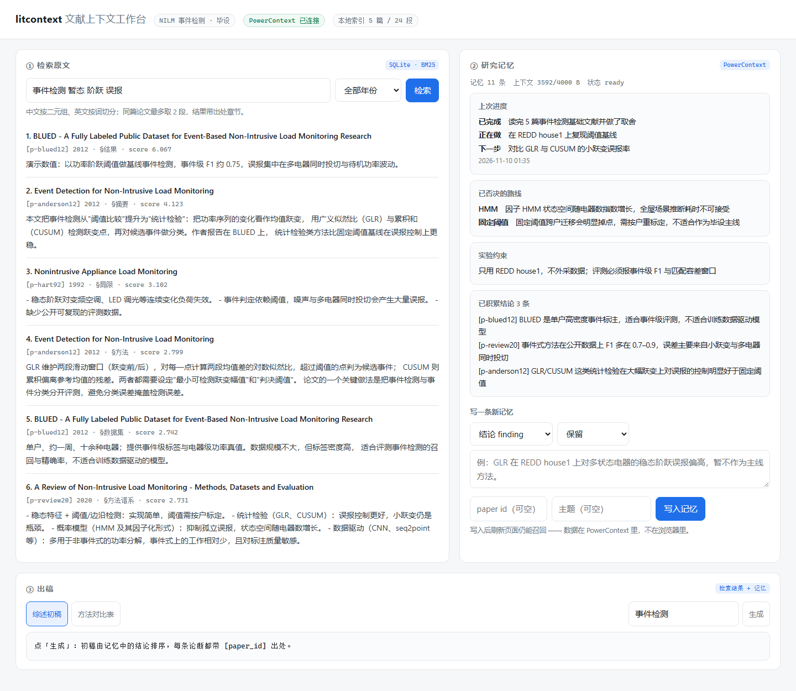
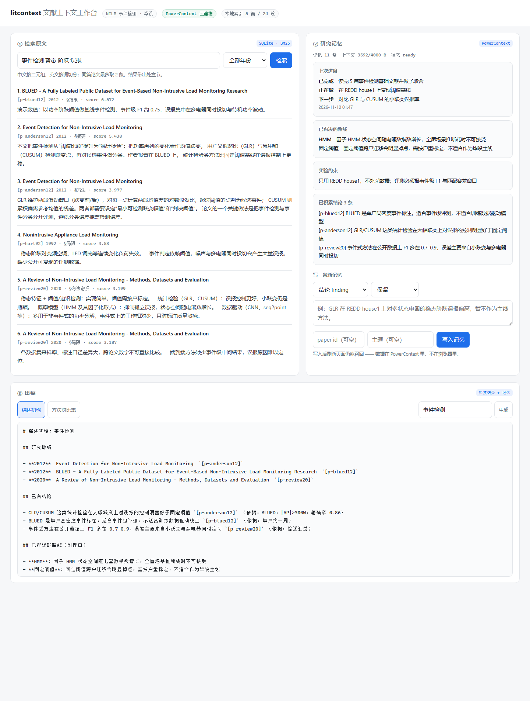

这不是"文献管理"问题，是"研究判断没有结构化保存"的问题。
知道"有一篇说阈值法不行"，但记不清是哪篇、在什么数据上、误差多少。于是又读了一遍。
当时排除 HMM 的理由写在某个草稿里，找不到。两周后又把状态空间复杂度推导了一次。
"上次做到哪一步、下一步验什么"散在聊天记录里，重新进入课题要花半小时。
文献可以重新下载，索引可以重建；但"我为什么这么选"只存在于当时的上下文里，会话结束就没了。
面向每天都在终端里读论文的人，不额外开一个网页应用。
Markdown / 纯文本 / PDF，按章节切块进本地索引，摘要片段同时写进 PowerContext 的 Source journal 留作证据。
中英混排分词 + BM25，支持年份区间与"方法/数据集"字段过滤，命中段落带 [paper_id §章节] 出处。
查询侧带 NILM 领域同义扩展（"虚警"→"误报"、"维特比"→"Viterbi"），--explain 可核对扩了哪些词。
结论、否决理由、实验约束、进度、方法对比数据分五类写入 PowerContext Memory。
"为什么"单独存在 reason 字段里。
resume 召回一屏上下文（有字节预算）；brief 生成综述初稿，compare 生成方法对比表。
# 1. 导入（正文进索引，摘要进 PowerContext Source） $ litcontext ingest ~/papers/nilm # 2. 检索原文 $ litcontext search "广义似然比 事件检测 误报" --top 3 # 3. 写下判断：结论 / 否决理由 / 约束 / 进度 / 对比数据 $ litcontext note --kind decision --method HMM --verdict reject \ --text "因子 HMM 状态空间随电器数指数增长，全屋推断耗时不可接受" \ --reason "算力有限，且事件式评测要显式事件输出" # 4. 一屏召回，然后出稿 $ litcontext resume $ litcontext brief --topic 事件检测 -o out/brief.md
只选用 PowerContext（赛题要求 seekdb / PowerContext 至少其一），并刻意不接大模型。
| 组成 | 在项目里做什么 | 能不能替换 |
|---|---|---|
| PowerContext | 记忆层：/v1/memory/remember 写入判断，/v1/memory/search 召回，
/v1/context/prepare 做有界装配，/v1/sources/content 存证据。 |
不能。换成文件或数据库就退化成"又一个笔记软件"，跨会话召回和预算控制都没了。 |
| 本地 SQLite + BM25 | 文献段落索引，供检索与初稿引用原文。 | 能。.data/ 删掉重新 ingest 即可，不影响任何研究判断。 |
| 大模型 | 不使用。初稿由模板拼装，引用全部来自记忆与索引。 | 不需要。评审无需任何 API Key 即可复现，输出逐字一致。 |
一次完整执行的真实数字（5 篇演示语料，PowerContext 1.5.0，无模型配置）。 同样的流程在干净的 Ubuntu 上也能复现： GitHub Actions · qoder-litcontext-verify。
| 指标 | 关闭同义扩展 | 开启同义扩展 |
|---|---|---|
| 命中@1 | 38% | 50% |
| 命中@5 | 81% | 100% |
| 完全未命中率 | 19% | 0 |
| MRR | 0.573 | 0.700 |
复现：python scripts/eval_recall.py。语料里写 Viterbi，
用"维特比"提问时字面检索为零，扩展后排第一；扩展词可用 --explain 逐条核对。
代价照实写：1 条查询（deep learning）从第 3 名降到第 4 名。
$ litcontext resume # 服务重启后执行，内容不变 # 上次的进度 - 已完成：读完 5 篇事件检测基础文献并做了取舍 - 正在做：在 REDD house1 上复现阈值基线 - 下一步：对比 GLR 与 CUSUM 的小跃变误报率 ## 已经否掉的方向（别再走一遍） - HMM：因子 HMM 状态空间随电器数指数增长，全屋场景推断耗时不可接受 - 固定阈值：跨户迁移会明显掉点，需按户重标定 ## 上下文预算 - 状态：ready 占用：3592 / 4000 字节 POST /v1/scopes -> 200 · /v1/memory/search -> 200 · /v1/context/prepare -> 200


环境要求：Python 3.11+。不需要 Docker，不需要任何模型凭证。
# 1. 启动 PowerContext（Basic memory 模式，模型留空） $ pip install "powercontext[cli,server]==1.5.0" $ powercontext config init --template $ powercontext server run # 2. 安装本作品 $ cd qoder $ cp .env.example .env $ pip install -e ./litcontext # 3. 自检 + 跑通验证样例 + 打开工作台 $ litcontext doctor $ bash scripts/demo.sh $ litcontext serve --port 8765
完整步骤、常见问题与 Windows 注意事项见仓库里的 qoder/RUNBOOK.md；
逐条命令与预期输出见 qoder/VERIFY-SAMPLE.md。